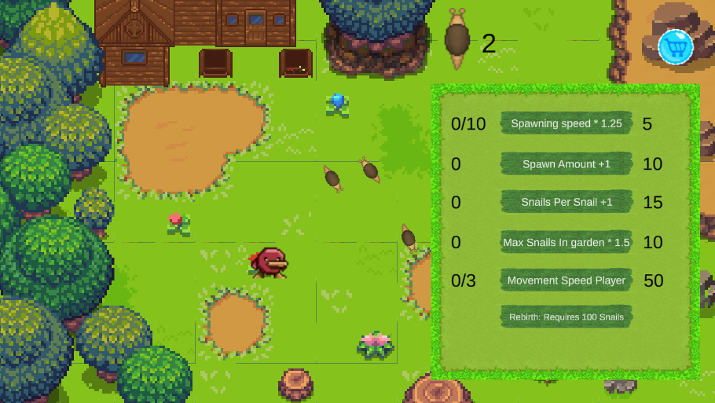

Dit spel gaat over een tuin vol met slakken. Je moet de slakken naar de kooien begeleiden door ze te achtervolgen. Je verdient een punt met iedere slak die je naar de kooien heb gestuurd. Met punten kun je upgrades kopen in de winkel.


Ik heb dit spel samen met een klasgenoot gemaakt. Het was echt teamwork en we vonden het erg leuk samen te werken. We hebben van elkaar geleerd. Ik heb geleerd om meer aandacht te hebben voor een aantrekkelijke omgeving. Mijn bijdrage aan het spel was de creatie en de beweging van de slakken. Ik heb ook de achtergrond van de winkel en de knoppen gemaakt. Ook heb ik geholpen om fouten in de code op te lossen, daardoor kan de winkel verborgen worden en de knoppen worden gedeactiveerd nadat je de winkel gesloten hebt.